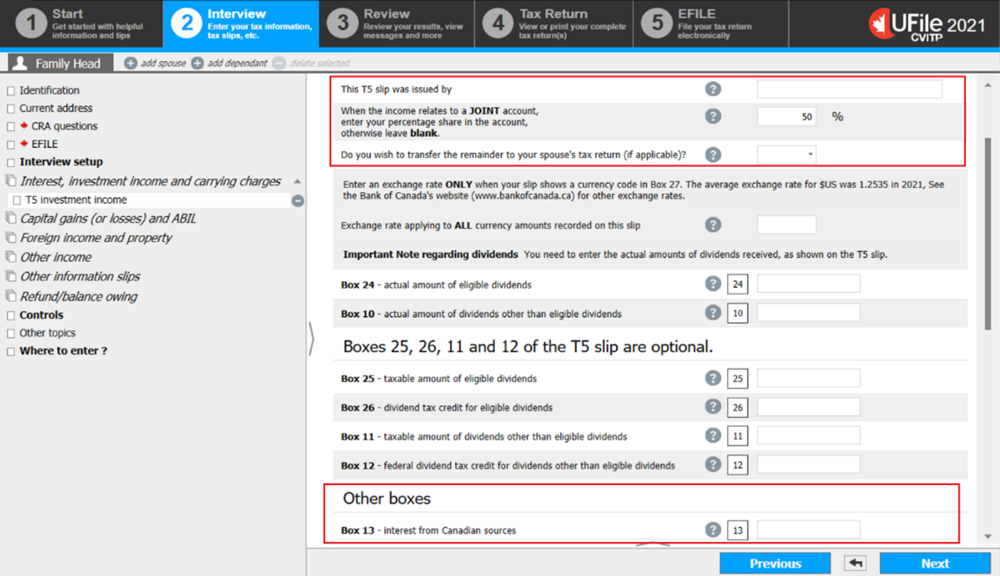
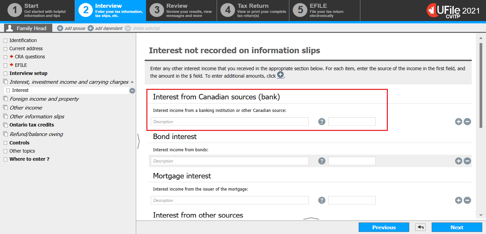
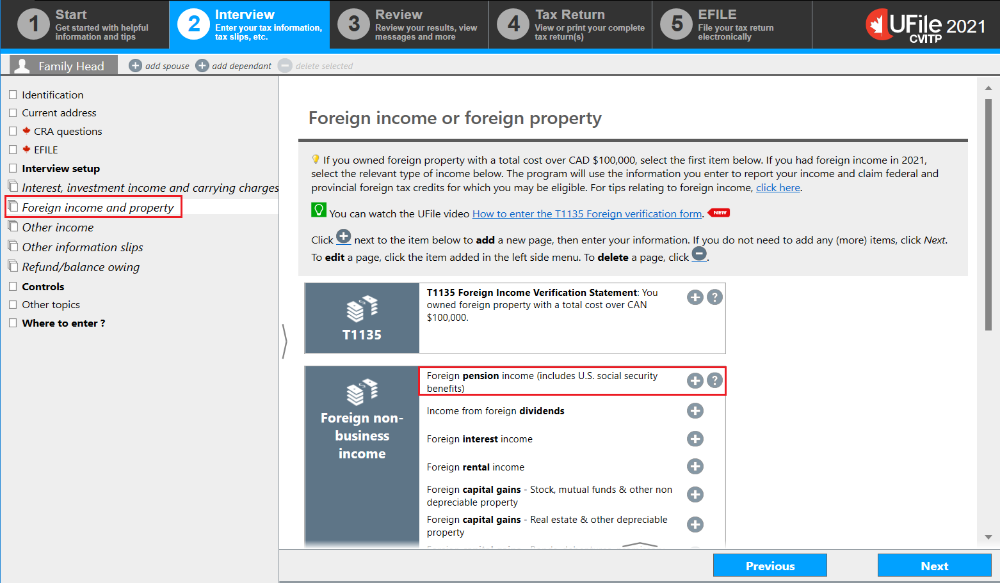
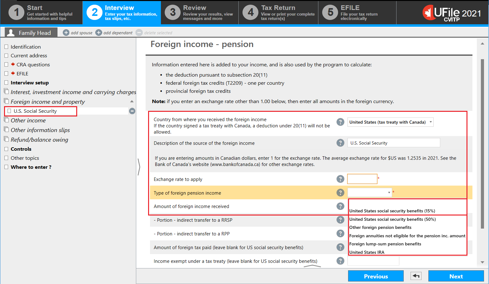
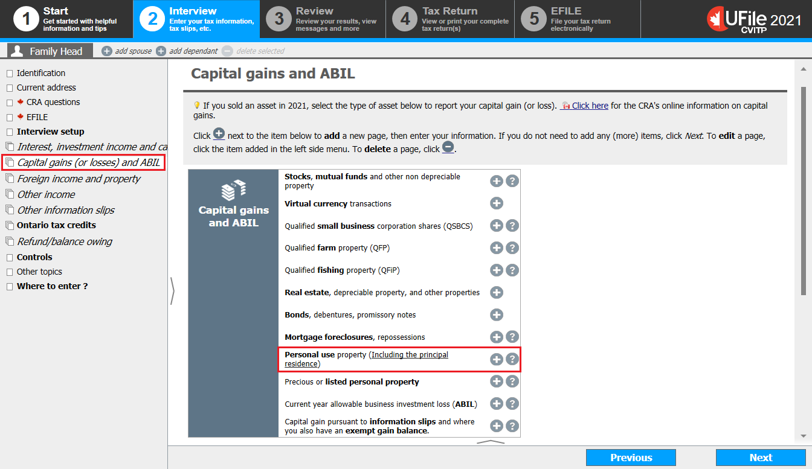
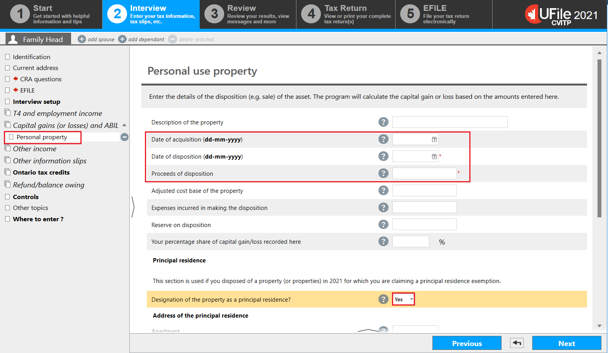
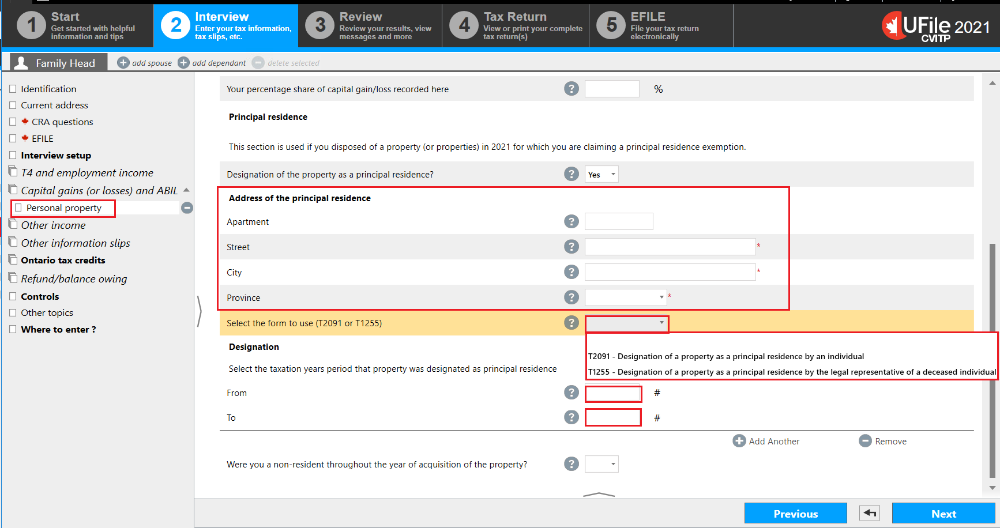

Interview setup

Text version of this screenshot
UFile screen
Under Interview tab
Family Head sub-tab
Interview setup topic is highlighted
Investment income and expenses section is highlighted
Interest, investment income and carrying charges/interest expenses/CNIL (T3, T5, T4PS, T5008, RC350) is highlighted
Foreign income or foreign property (T1135) is highlighted
- click Interview setup in the left-side menu
Interest income

Text version of this screenshot
UFile screen
Under Interview tab
Family Head sub-tab
Interest, investment income and carrying charges topic is highlighted
Interest, investment income and carrying charges page
T5 - Investment income is highlighted
Interest income not on information slips is highlighted
- click Interest, investment income and carrying charges in the left-side menu
Interest income from a T5 slip
Text version of this screenshot
UFile screen
Under Interview tab
Family Head sub-tab
T5 investment income topic
This T5 slip was issued by is highlighted
When the income relates to a JOINT account, enter your percentage share in the account, otherwise leave blank. is highlighted with 50% entered into field
Do you wish to transfer the remainder to your spouse’s tax return (if applicable)? is highlighted
Box 13 – Interest from Canadian sources is highlighted
- enter the name of the issuer of the T5 slip into the This T5 slip was issued by field
- when a percentage is entered into the When the income relates to a JOINT account, enter your percentage share in the account, otherwise leave blank field, an additional drop-down menu is generated:
- if you select Yes from the Do you wish to transfer the remainder to your spouse’s tax return (if applicable)? drop-down menu, the software automatically reports the difference in the spouse or common-law partner’s tax return when preparing the tax returns together
- enter the total amount of interest into the Box 13 field, even if it is a joint account
Interest not recorded on information slips
Text version of this screenshot
UFile screen
Under Interview tab
Family Head sub-tab
Interest topic
Interest from Canadian sources (bank) section is highlighted
Instructions for Interests from a financial institution that did not issue a slip
- enter a description (for example, bank account) into the Interest income from a banking institution or other Canadian source field and the total amount received in the year into the field next to it
Instructions for Interests found on a notice of assessment or reassessment
- scroll down to the Interest on any tax refund received in the year as shown on your notice of assessment or reassessment field
- enter a description (for example, tax refund interest) and the total amount received in the year in the field next to it
Foreign income or foreign property
Text version of this screenshot
UFile screen
Under Interview tab
Family Head sub-tab
Foreign income and property topic is highlighted
Foreign income or foreign property page
Foreign pension income (includes U.S. Social Security benefits) is highlighted
Instructions for United States social security benefits
- click Foreign income and property in the left-side menu
- click the + sign next to Foreign pension income (includes U.S. social security benefits)
U.S. Social Security benefits
Text version of this screenshot
UFile screen
Under Interview tab
Family Head sub-tab
U.S. Social Security topic is highlighted
Foreign income - pension page
Country from where you received the foreign income
If the country signed a tax treaty with Canada, a deduction under 20(11) would not be allowed: United States (tax treaty with Canada) is highlighted
Description of the source of the foreign income: U.S. Social Security is highlighted
Exchange rate to apply is highlighted
Type of foreign pension income is highlighted with the following drop-down options:
United States social security benefits (15%)
United States social security benefits (50%)
Other foreign pension benefits
Foreign annuities not eligible for the pension inc. amount
Foreign lump-sum pension benefits
United States IRA
Amount of foreign income received is highlighted
- select United States (tax treaty with Canada) from the Country from where you received the foreign income drop-down menu
- enter U.S. Social Security into the Description of the source of the foreign income field
- enter the applicable rate into the Exchange rate to apply field
- select the applicable Type of foreign pension income from the drop-down menu
- enter the applicable amount into the Amount of foreign income received field
- click Next
Capital gains and ABIL
Text version of this screenshot
UFile screen
Under Interview tab
Family Head sub-tab
Capital gains (or losses) and ABIL topic is highlighted
Capital gains and ABIL page
Personal use property (including the principal residence) is highlighted
Instructions for sale of a principal residence
- click Capital gains (or losses) and ABIL in the left-side menu
- click the + sign next to Personal use property (Including the principal residence)
Personal use property (sale of a principal residence)
Text version of this screenshot
UFile screen
Under Interview tab
Family Head sub-tab
Personal property topic is highlighted
Personal use property page
Date of acquisition is highlighted
Date of disposition is highlighted
Proceeds of disposition is highlighted
Designation of the property as a principal residence? is highlighted
Yes is highlighted
- enter the matching information into the following fields:
- Date of acquisition
- Date of disposition
- Proceeds of disposition
- Your percentage share of capital gain/loss recorded here. When a percentage is entered, another question is generated:
- Do you wish to transfer the remainder to your spouse’s tax return (if applicable)? If you select Yes from the drop-down menu, the software automatically generates the T2091 and Schedule 3 for the spouse only when you are preparing their tax returns together
Ufile tip
There is no need to repeat these steps in the spouse or common-law partner’s profile.
- Select Yes from the Designation of the property as a principal residence? drop-down menu
Ufile tip
Once you select Yes, the tax software generates additional fields below.
Personal use property (sale of a principal residence) continued
Text version of this screenshot
UFile screen
Under Interview tab
Family Head sub-tab
Personal property topic is highlighted
Address of the principal residence section is highlighted
Select the form to use (T2091 or T1255) section is highlighted with the following drop-down options:
T2091 – Designation of a property as a principal residence by an individual
T1255 – Designation of a property as a principal residence by the legal representative of a deceased individual
Select the taxation years period that property was designated as principal residence section
From field is highlighted
To field is highlighted
- complete the required fields under the Address of the principal residence heading
- select T2091 – Designation of a property as a principal residence by an individual from the Select the form to use (T2091 or T1255) drop-down menu
- under the Designation heading, enter the years the property was designated as the individual’s principal residence; the year provided in the From field should correspond with the Date of acquisition
Ufile tip
When entering a year earlier than 1972 into the From field, the tax software automatically defaults the selection back to 1972, because this was the first year the designation was made possible.